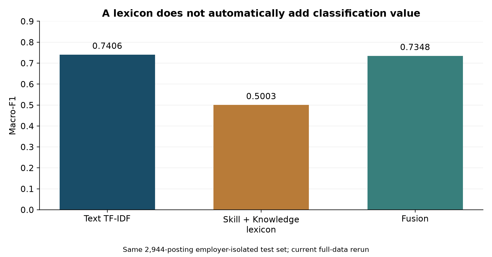
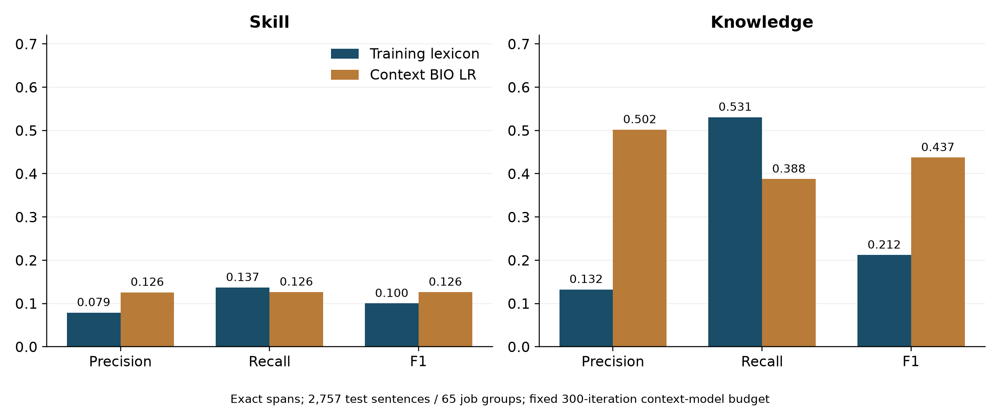
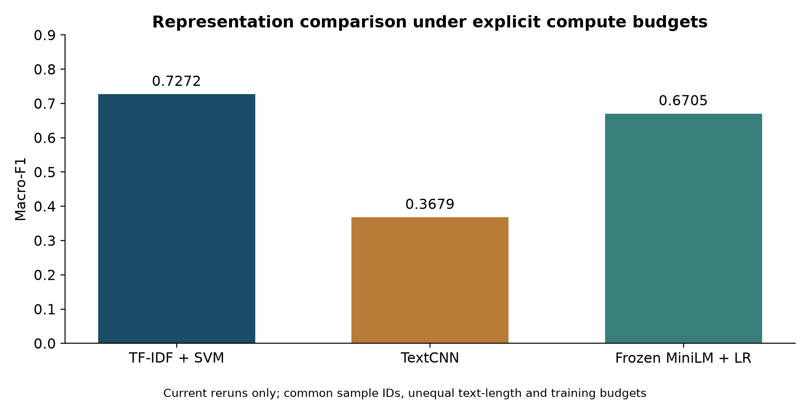

Does the skill signal help?
Classifying a job advertisement and extracting its exact skill requirements answer different operational questions. This study tests a Skill + Knowledge phrase lexicon against a full-text TF-IDF baseline under strict employer isolation, then evaluates exact-span BIO extraction and representation budgets separately.
01 · Define the decision before the model
A job platform needs a reliable taxonomy for routing; a careers service needs interpretable skill requirements. A dictionary can match frequent phrases without adding category-discriminative signal, and a correct category label does not validate an extracted skills profile.
Classification uses the archived employer-isolated train/validation/test partitions. Normalized employer groups do not overlap; this does not rule out shared boilerplate between different employers. Task-specific vocabulary is fit on training data, regularization is selected on validation data, and the three feature sets share 2,944 test postings. MiniLM uses a pretrained frozen encoder. The +0.02 threshold exists in supplied code; no independently timestamped preregistration was provided.
- Text baseline: Word (1–2 gram) + char_wb (3–5 gram) TF-IDF, sublinear TF, linear SVM.
- Lexicon channel: Trie-matched phrase counts from training SkillSpan Skill & Knowledge spans + summary density features.
- Equal-weight fusion: Horizontal feature concatenation evaluated on identical employer clusters.

02 · Evaluate explanations directly (Exact-Span BIO Extraction)
Skill and Knowledge are separate BIO annotation channels in SkillSpan. Exact-span evaluation requires both start and end token boundaries to match gold annotations. Sentences seen verbatim in training are removed from dev/test before scoring, and confidence intervals resample 65 job-posting clusters rather than treating sentences as independent.

| Channel | Method | Precision | Recall | Exact-Span F1 |
|---|---|---|---|---|
| Skill | Lexicon | 0.0789 | 0.1369 | 0.1001 |
| Skill | Context BIO | 0.1258 | 0.1264 | 0.1261 |
| Knowledge | Lexicon | 0.1324 | 0.5306 | 0.2120 |
| Knowledge | Context BIO | 0.5017 | 0.3876 | 0.4373 |
- Skill: ΔF1 +0.0260; 95% interval [-0.0020, +0.0518].
- Knowledge: ΔF1 +0.2254; 95% interval [+0.1830, +0.2693].
These are exploratory intervals without multiplicity correction. Rerun scores differ
from historical paper values (context F1: Skill 0.1185; Knowledge 0.4217); both are retained in results/metrics.json.
The fixed optimization budget and environment sensitivity are disclosed.
These invented examples explain evaluation questions. They are not inspected predictions or established explanations for the measured score differences.
"collaborate with stakeholders" could occur in several categories. A match need not distinguish categories. Testing whether generic phrases explain the fusion result requires a targeted ablation; none is claimed here.
03 · Put model scores in context
Current reruns: fair_tfidf: 0.7272; cnn: 0.3679; minilm: 0.6705. TF-IDF uses full descriptions; CNN and MiniLM use truncated inputs (256 tokens/subwords). The three-epoch CNN and frozen encoder are budgeted comparisons on shared sample IDs, not exhaustive architecture tuning.

04 · What would change a practical decision?
Retain the text baseline for broad-category routing until a new feature design clears a relevant gain criterion. Use extracted requirements as source-linked candidates for human review, not as automatic judgments about a person's competence or suitability.
A next study could filter generic terms using training data, tune fusion weights on validation data, and reserve a new employer/time holdout for one final comparison. Those experiments have not been performed here.
Evidence and limits
The downloader rebuilds the archived cohort from fixed public releases and checks 22,213 source references. The selection ledger preserves the delivered membership; it does not recover the missing original split-generation script. Historical English advertisements do not represent current US, Singapore or Hong Kong hiring.
The paper reports an exploratory JobStreet fusion decline, but its full CSV and archived exclusion index were not supplied and its card has conflicting licenses. This release does not claim to reproduce that external experiment.
python run.py verify
python run.py smoke
python run.py data
python run.py reproduce